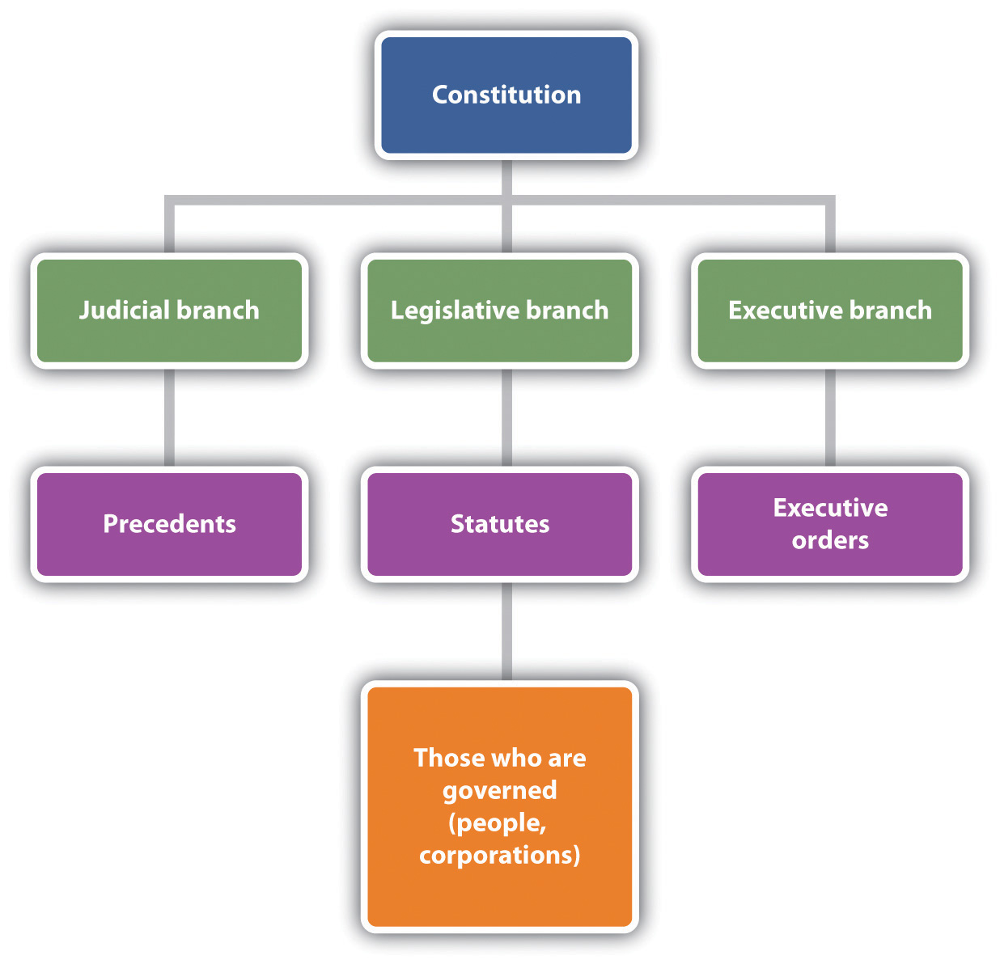
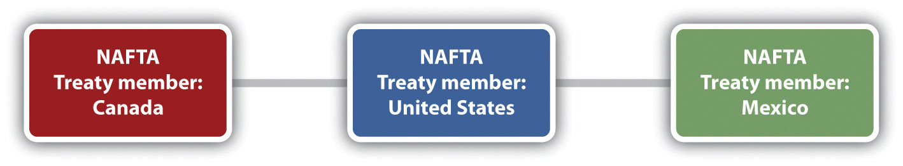
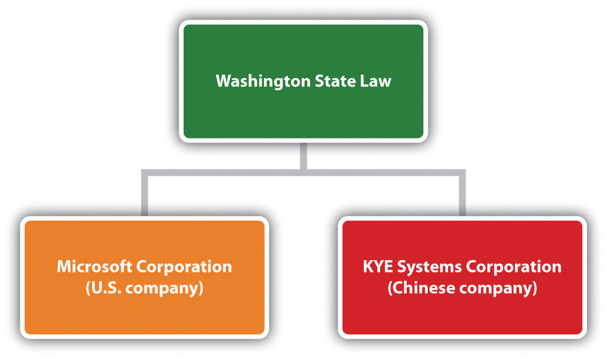

After reading this chapter, you should understand the foundational concepts of business in the global environment. You will learn about why it is important to understand the global legal environment, as well as some of the sources of international law that pertain to business. You will examine the concept of sovereignty and the unique challenges that concept poses, specifically in relation to ethical questions arising in the international business context. You will explore concepts critical to conducting business in the international environment, including trade regulations, international contract formation, and prohibited activities. At the conclusion of this chapter, you should be able to answer the following questions:
It’s a globalizing world. If you are considering starting a small business, it may not occur to you to consider exporting your product. However, according to the Small Business Association, 96 percent of the world’s potential customers live outside of the United States.U.S. Small Business Administration, “Take Your Business Global,” June 2010, http://www.sba.gov/idc/groups/public/documents/sba_program_office/oit_sba_fast_facts.pdf (accessed September 27, 2010). So what’s stopping you? Maybe you are not sure how to negotiate a contract with a supplier or manufacturer overseas. Or maybe you are uncertain about U.S. laws relating to importing and exporting. The international market is lucrative, though the legal environment for operating in that forum is different from that for a business that operates exclusively within the borders of the United States. For this reason, it is important to be familiar with some of the basic concepts of doing business in the global economy.
You may be acquainted with challenges faced by U.S. businesses and workers when considering the questions associated with this new business environment. When we shop for food, computers, clothing, pet food, automobiles, or just about anything produced for the global market, we might very well purchase a final product from a different country, or a product composed of components or labor from many different parts of the world. Economists tell us that this represents the most efficient method of production and labor. After all, if a business can pay $1 per hour to a worker overseas, why would it choose instead to pay $12 per hour to a U.S. worker?
Of course, it’s not necessarily a sunny picture for people whose jobs have been outsourced. Additionally, businesses operating in the international environment face unique questions. For instance, if the new labor force that is being paid $1 per hour is composed of workers who are forced into sweatshop conditions, then there may be serious consumer backlash against the company that has chosen to do business with that particular manufacturer. Check out Note 13.2 "Hyperlink: National Labor Committee" to view current stories about modern sweatshops that produce goods that you may own.
Click on Alerts or Reports at the top of the page. Do you recognize any products that you own or companies that you enjoy shopping with?
Even if the consumers do not respond negatively to business decisions that result in the use of child labor or sweatshop conditions for the production of goods, the question of ethics still remains. For instance, does a company wish to place profit over concerns that it might have about human rights? And, does a company have any long-lasting duties to its U.S. workforce, or is it all right to simply outsource jobs if it makes economic sense to do so?
Besides human rights issues, other concerns about doing business in the international environment exist. For example, it is not uncommon for polluting industries to locate to countries that have laxer environmental regulations than they would face at home. Environmental degradation, such as the overuse of natural resources, generation of pollution, and improper disposal of waste products, is a common by-product of global businesses.
International business includes not only trade in new goods but also the disposal of old ones. For example, the U.S. Government Accounting Office found, after an undercover investigation, that many U.S. companies were willing to export old electronic products that contain cathode-ray tubes (CRTs), each composed of several pounds of lead, to countries where unsafe recycling practices occur, without following U.S. regulatory law. Unsafe recycling of toxic electronic waste, known as e-wasteElectronic waste, often containing toxic materials that are subject to regulation by the U.S. Environmental Protection Agency., has serious effects on the environment and on human health. Additionally, some of the companies that were willing to do this have publically proclaimed their commitments to environmentally safe practices.U.S. Government Accountability Office, “Electronic Waste: EPA Needs to Better Control Harmful U.S. Exports through Stronger Enforcement and More Comprehensive Regulation,” GAO 08-1044, August 2008, http://www.gao.gov/new.items/d081044.pdf (accessed September 27, 2010). Check out Note 13.4 "Hyperlink: E-waste: From the United States to China" for a video concerning U.S. exporting of toxic waste.
http://www.cbsnews.com/video/watch/?id=5274959n&tag=related;photovideo
Environmental degradation is much like sweatshop labor in the sense that some companies that engage in harmful practices will pay the price by suffering the fallout from consumer protests. Again, regardless of consumer reaction, the question of whether to engage in such practices is not only a legal question but also a question of ethics.
This chapter explores the nature of international law. Additionally, it reviews considerations that are relevant to businesses operating internationally, such as trade regulations, contract formation between international parties, and prohibited activities. It also examines some current ethical issues associated with the global environment of business.
Imagine hearing allegations that your company’s products are being assembled overseas in working conditions that have resulted in extreme despondency among workers, including several suicides. This is precisely the situation that Apple, Dell, Hewlett-Packard, and others find themselves in. Foxconn, which is part of the Taiwan-based Hon Hai Precision Industry Co., operates a large electronics assembly complex in China. Allegations have arisen that harsh working conditions have led to a string of suicides. If true, should these U.S. companies find another electronics manufacturer to assemble their products? Do consumers have any voice in this matter?
From your seat, it may seem like an obvious point that businesses should follow the laws and behave ethically in their business dealings if they wish to be successful for the long haul. However, when we look at the question of how a company might “follow the law,” we need to consider which laws we are referring to. When a U.S. company conducts business in another country, it must comply with applicable U.S. law, and with the law of the foreign nation where it is located. Several U.S. laws apply to the business activities of U.S. companies operating on foreign soil. However, it is perfectly legal for a U.S. company to contract with an overseas manufacturer for labor, without insisting that those workers are paid a wage equal to the U.S. federal minimum wage. In the case of Hon Hai and Foxconn, none of the U.S. companies can get into legal trouble regarding the fact that, until very recently, the average worker there made the equivalent of $132 per week, which is, of course, far below the U.S. federal minimum wage.Ting-I Tsai, “Hon Hai Gives Workers a Raise,” Wall Street Journal, May 29, 2010, http://online.wsj.com/article/SB10001424052748703957604575272454248180106.html?mod=WSJ_hpp_sections_tech (accessed September 27, 2010). There are several reasons for this.
Imagine that Apple alleged that labor conditions were not contractually satisfied and, therefore, Foxconn and Hon Hai Precision Industry Co. breached the agreement that they had made with Apple. If this were the case, Apple may wish to terminate its relationship with these companies. However, it is unlikely that the Asian companies would agree. This means that a dispute could arise under a contract between international parties. If Foxconn and Hon Hai disputed this allegation, which rule of law should govern the dispute? In the United States, contracts laws are state law rather than federal law, so should the laws of a particular state, like California, be applied to this dispute? Or should Chinese law apply? This can be a complicated question for several reasons. However, it is necessary to first examine of the nature of international law to understand this complexity. Try to make a distinction between the nature of international law between nation-states and the nature of law as it applies to businesses operating in the international arena. In the next section, we will return to the question of which type of law should apply to disputes in international contracts.
We are all subject to domestic laws, because we all live in a sovereign stateA political entity that governs the affairs of its own territory without being subjected to an outside authority.. A sovereign state is a political entity that governs the affairs of its own territory without being subjected to an outside authority. Countries are sovereign states. The United States, Mexico, Japan, Cambodia, Chile, and Finland are all examples of sovereign states. In domestic lawLaw that is applicable in the nation in which it is created., or law that is applicable within the nation where it is created, some legitimate authority has the power to create, apply, and enforce a rule of law system. There is a legitimate law-creating authority at the “top,” and the people to be governed at the “bottom.” The law might be conceived of as being “handed down” to the people within its jurisdiction. This is a vertical structure of law, because there is some “higher” authority that imposes a rule of law on the people. In the United States, laws are handed down by the legislative branch in the form of statutory law, by the judicial branch in the form of common law, and by the executive branch in the form of executive orders, rules, and regulations. These government branches have legitimate authority to create a rule of law system, and this authority is derived from the U.S. Constitution. See Figure 13.3 "The Vertical Nature of U.S. Domestic Law" for a simple illustration of the vertical nature of domestic law in the United States. Of course, people can influence who become members of the branches of government through elections and which issues are brought before government to consider and possibly legislate, but that does not change the fact that people are subjected to laws that are handed down in a vertical nature.
Figure 13.3 The Vertical Nature of U.S. Domestic Law
It’s important to note, however, that not all law can be conceived as a vertical structure. Some laws, such as international lawLaw between sovereign states., or law between sovereign states, are best thought of in a horizontal structure. For example, treaties have a horizontal structure. This is because the parties to international treaties are sovereign states. Since each state is sovereign, that means that one sovereign state is not in a legally dominant or authoritative position over the other. See Figure 13.4 "An Illustration of the Horizontal Nature of International Law between Nation-States" for an illustration of the horizontal nature of international law between nation-states, using the North American Free Trade Agreement as an example.
Figure 13.4 An Illustration of the Horizontal Nature of International Law between Nation-States
An obvious challenge to laws created in horizontal power structures that lie outside of any legitimate lawmaking authority “above” the parties is that enforcement of violations can be difficult. For this reason, many horizontal laws, like treaties, contain provisions that require the parties to the treaty to submit to a treaty-created dispute resolution panel or other neutral tribunal, such as the International Court of JusticeAn international tribunal, located at The Hague, Netherlands. (ICJ). Though it is common for treaties to set forth expectations that disputes will be heard before some predesignated tribunal, some international relations experts believe that the state of international law is one of persistent anarchy.
Examine the differences between vertical structure and horizontal structures of law. Consider the case of a criminal in the United States. The criminal can be prosecuted by the laws of the United States (federal or state, depending on the jurisdiction of the offence) and, if convicted, will have to submit to the authority of the United States for punishment. This is because we recognize that there is some legitimate authority in domestic law that allows the U.S. government to exact punishment against convicted criminals. Compare this to a sovereign state that violates a treaty agreement. For example, perhaps a member of a treaty has broken its treaty promise to refrain from fishing in a certain fishery. Since in the international arena there is no overarching power “above” the parties to a treaty, enforcement of treaty agreements can be difficult.
Another common challenge in international law is that the laws are applicable only to parties who voluntarily choose to participate in them. This means that a sovereign state cannot generally be compelled to submit to the authority of the international law if it chooses not to participate. Compare this with domestic law. Everyone within the United States, for example, is subject to the jurisdiction of certain state and federal courts, whether they voluntarily choose to submit to jurisdiction or not. This is why fleeing criminals can legitimately be caught and brought to justice in domestic law through extradition.
Businesses are not involved in signing treaties or in creating law that applies between sovereign states. Indeed, the sovereign states themselves have the only power to conduct foreign affairs. In the United States, that power rests with the president, though Congress also has important roles. For example, the Senate must ratify a treaty before the treaty binds the United States and before its provisions become law for the people within the United States.
However, businesses are required to abide by their own applicable domestic laws as well as the laws of the foreign country in which they are conducting business. When domestic laws apply to businesses operating internationally, that is a vertical legal structure, such as is illustrated in Figure 13.3 "The Vertical Nature of U.S. Domestic Law". This is because there is a legitimate authority over the business that governs its behavior.
As noted in the example concerning U.S. companies doing business with Foxconn and Hon Hai Precision Industry Co., international business can involve creating contracts between parties from different nations. These contracts are horizontal in nature, much like a treaty. However, they are also subject to a vertical legal structure, because the parties to the contact will have chosen which laws will apply to resolve disputes arising under the contract. For example, if Microsoft, a U.S. company, has a contract with KYE Systems Corp., a Chinese manufacturer, to assemble its products, the contract might very well include a choice of law clause that would require any contract dispute to be settled in accordance with Washington State law. A choice of law clauseA contractual provision that specifies which law and jurisdiction will apply to disputes arising under the contract. is a contractual provision that specifies which law and jurisdiction will apply to disputes arising under the contract. The contract might contain such a clause because Microsoft’s headquarters are in Washington State, and it would be more convenient for Microsoft to settle any disputes arising under a contract by using the laws in the state where it is located. This probably would be terribly inconvenient for KYE Systems Corp., but the benefits of obtaining a Microsoft contract probably outweigh the potential inconvenience of resolving disputes in the Washington State court system. Additionally, a well-established United Nations treaty, the Convention on the Recognition and Enforcement of Foreign Arbitral AwardsA treaty that provides for the enforcement of arbitral awards among member states., provides for the enforcement of arbitral awards among member states. That means Microsoft and KYE Systems Corp. could agree in a predispute arbitration clause, perhaps in a purchase order or invoice, to arbitrate their disputes in Washington, using Washington contract law, and in English. The prevailing party in the arbitration could take the award to court in either Washington or China and convert it into a legally binding judgment under the treaty. Choice of law clauses have consequences regarding the way the contract will be interpreted in the event of a dispute, costs associated with defending a complaint arising under a contract, and convenience. See Figure 13.5 "The Horizontal and Vertical Nature of Contract Relationships in the Global Legal Environment" for an illustration of the horizontal and vertical nature of contract law in international business.
Figure 13.5 The Horizontal and Vertical Nature of Contract Relationships in the Global Legal Environment
While international law between sovereign states is relevant to business in many ways—for instance, it would be illegal for a company to ignore the terms of a treaty that its own country had ratified—the types of law that are relevant to businesses operating in the international environment are domestic laws. A choice of law clause within the contract designates which country’s law will apply to a dispute arising under an international contract.
Several U.S. laws apply to U.S. companies conducting business internationally. For example, trade regulations are relevant to importers and exporters of products. Also, some activities are prohibited to U.S. businesses, such as doing business with a terrorist organization. It is important for all companies contemplating doing business in the international environment to understand the laws that apply to their activities so that they can avoid criminal and civil liability, and maintain a commitment to ethics.
The removal or reduction of trade barriers in accordance with the former General Agreement on Tariffs and Trade (GATT)An international treaty that worked to reduced trade barriers. and most recently the World Trade OrganizationCreated by the GATT, it addresses trade between nations, including dispute resolution. presents opportunities for businesses. Likewise, multinational agreements that remove trade barriers to create largely duty-free and tariff-free trading zones, such as the North American Free Trade AgreementA trade agreement between Canada, the United States, and Mexico., allow for freer flow of goods and services between specific countries. These agreements create tremendous opportunities for businesses because they lower the costs associated with importing and exporting, which is a primary consideration for many companies.
Companies wishing to export or import products are subject to federal trade regulations. Export controlsControls that prohibit or restrict the export of certain types of products. prohibit or restrict the export of certain types of products while limiting or restricting specific products from entering a country, perhaps by way of tariffs or quotas. The U.S. government views exporting as a privilege and not as a right and has the authority to impose a total ban on exporting on U.S. companies for export control violations. Try to imagine what an export ban would do to companies such as Microsoft, Boeing, or Apple.
The activities of companies that ship products overseas are subject to federal export controls. To exportTo transport products to another country. simply means to transport products to another country. Export controls are regulated by several departments of the federal government. For example, the Export Administration Regulations are administered by the U.S. Department of Commerce Bureau of Industry and Security, and they regulate items that may have a dual commercial or military use, such as computers and electronics. The U.S. Department of the Treasury Office of Foreign Assets Control regulates and enforces trade sanctions. The U.S. Department of State International Traffic in Arms Regulation prohibits certain types of trade, such as the unlicensed export of weaponry and certain chemicals.
Other federal agencies and programs exist in a supportive capacity, to assist U.S. businesses in their export endeavors rather than to regulate and enforce export controls. For example, the U.S. Department of Commerce’s International Trade Administration supports U.S. exports and competitiveness abroad. Check out Note 13.21 "Hyperlink: Exporting?" for several short videos designed to teach companies how to engage in this lucrative and large marketplace.
http://www.census.gov/foreign-trade/aes/exporttraining/videos
Check out these short training videos to learn about regulatory compliance.
Similarly, the National Export Initiative was created by the Obama administration, and it assists U.S. businesses to operate in the global market. Check out President Obama discussing the need to boost exports at a recent import/export conference.
Companies wishing to import products are also subject to import controlsControls that limit or restrict specific products from entering a country.. Import controls take many forms including tariffs, quotas, and bans or restrictions. The U.S. Department of Homeland Security Customs and Border Protection Agency (CBA) has a primary role in import control administration and regulation. For example, it inspects imports to classify them to establish their tariff schedule.
A tariffAn import tax. applies to certain goods imported from other countries. Tariffs are import taxes. They are imposed to render the imported product more expensive and to keep the cost of nonimported products (domestic products) attractive to consumers. CBA customs officers classify the imported goods, which determines the applicable tariff. However, the Customs Modernization and Informed Compliance Act places responsibility for compliance with import laws on the importer.
QuotasLimits on quantity. apply to certain goods. Quotas are simply limits on quantity. No absolute quotas exist, but certain tariff rate quotas apply to certain items, such as specific types of textiles and dairy products. A tariff rate quotaA favorable tariff on certain quantities of particular types of imports. simply provides favorable tariffs on certain quantities of particular types of imports.
BansProhibit importation of certain items by law. apply to goods that are prohibited by law to import, because they are dangerous to public safety, health, the environment, or national interests. Other items are restricted from import. For example, it is illegal to import items of cultural heritage from other countries without permission. Check out Note 13.28 "Hyperlink: What? These Old Rocks?" to see a recent story about 525-million-year-old fossils that were illegally imported into the United States and have been returned to China.
http://www.cbp.gov/xp/cgov/newsroom/highlights/chinese_fossils.xml
Along with the CBA, the U.S. International Trade Commission investigates import injuries to the United States, such as dumping and subsidized imports, and the need for safeguards. DumpingWhen a foreign producer exports products to sell at prices less than its cost of manufacturing. is when a foreign producer exports products to sell at prices less than its cost of manufacturing. Subsidized importsProducts produced in a foreign land in which a government has provided financial assistance for the production. are products produced overseas for which a government has provided financial assistance for the production. When dumping or subsidized imports materially injure or threaten to injure domestic producers, the United States may impose a countervailing dutyA type of tariff imposed for subsidized products. for subsidized products or an antidumping dutyA type of tariffs imposed on dumped goods. for dumped products. These duties, which are particular types of tariffs, reduce the negative impact that such practices could have on U.S. companies. SafeguardsLimited duration growth restrictions that are imposed when domestic markets are threatened or injured from imports. are limited duration growth restrictions that are imposed when domestic markets are threatened or injured from imports. This allows for domestic markets to adjust to the surge from the import market. For example, the United States imposed safeguards on Chinese textiles in response to actual or threatened market disruption of the U.S. textile industry.U.S. Government Accountability Office, “U.S.-China Trade: Textile Safeguards Should Be Improved,” GAO-05-296, April 2005, http://www.gao.gov/new.items/d05296.pdf (accessed September 27, 2010).
The U.N. Convention on Contracts for the International Sale of GoodsA treaty that applies to the sale of goods between parties from countries that are signatories to this treaty. (CISG) applies to the sale of goods between parties from countries that are signatories to this treaty. Like the Uniform Commercial Code (UCC)A model statute that seeks to provide uniformity to contracts law among the different states. It is not a law until state legislatures adopt it as law., it creates a uniform law for the parties that adopt it. Specifically, the CISG applies to contracts for international sale of commercial goods. Additionally, like the UCC, it provides gap-fillers for terms that may not be expressly stated in the contract. However, important differences between the UCC and the CISG exist, particularly with respect to revocability of an offer, acceptance, the requirement for a writing to be enforceable, and essential terms. See Figure 13.7 "A Comparison of Differences between the CISG and the UCC" for a comparison between the CISG and the UCC.U.S. Department of Commerce, Office of the Chief Counsel for International Commerce, “The U.N. Convention on Contracts for the International Sale of Goods,” August 2002, http://www.osec.doc.gov/ogc/occic/cisg.htm (accessed September 27, 2010). The contracting parties may opt out of the CISG, providing that they do it expressly.
Figure 13.7 A Comparison of Differences between the CISG and the UCC

The CISG does not limit the parties to a particular forum to resolve disputes, and it does not limit the terms of the contract itself. It is important for parties to choose which forum will apply to disputes arising under the contract. Choice of forumClauses and contract provisions that specify where complaints will be heard. clauses specify where complaints will be heard. If parties opt out of the CISG, then they must choose which law will apply to their contract by a choice of law clause. The parties will also need to agree on the official language of the contract. Given the precise language necessary for contractual agreements to be interpreted, this choice clearly matters to the interests of the contracting parties.
U.S. citizens that are working for U.S. companies overseas are protected by U.S. federal employment laws, such as Title VII of the Civil Rights ActAn important federal statute that prohibits illegal discrimination. and the Americans with Disabilities ActA federal statute that prohibits illegal discrimination.. This means that U.S. companies may not illegally discriminate against U.S. employees with a protected characteristic simply because those employees happen to report to work for the company on foreign soil.
Additionally, the Alien Torts Claims ActA federal statute that allows noncitizens to bring suit in U.S. federal court against U.S. businesses or citizens that have committed torts or human rights violations in foreign lands. allows noncitizens to bring suit in U.S. federal court against U.S. businesses or citizens that have committed torts or human rights violations in foreign lands.
Those engaged in international business must be aware of prohibited activities, because severe criminal penalties are possible. For example, paying bribes to get things done is not permitted. The Foreign Corrupt Practices Act (FCPA)A federal statute that prohibits the payment of bribes by U.S. companies and the employees of those companies. prohibits the payment of bribes by U.S. companies and the employees of those companies. Violation of this law is a criminal offense. It does, however, permit grease paymentsFacilitating payments that are not bribes., or facilitating payments, if such payments are permitted by the local government where the payments occurred. Since it is extremely rare to find a jurisdiction that legally permits grease payments (even in countries where corruption is rampant, it’s probably still illegal), the grease payments exception provides false comfort to those who undertake to use it.
U.S. citizens and companies must refrain from doing business with prohibited people or entities. The U.S. Department of the Treasury Office of Foreign Assets Control (OFAC) maintains a list of Specially Designated Nationals and Blocked Persons, which is a list of persons, businesses, and entities with which U.S. citizens are forbidden from conducting business. Similarly, U.S. citizens are not permitted to engage in trade or business dealings with those in countries in which a U.S. embargo or U.S. imposed economic sanctions exists. Check out Note 13.42 "Hyperlink: Prohibited Parties" for these lists.
Specially Designated Nationals and Blocked Persons List
http://www.treas.gov/offices/enforcement/ofac/sdn
Economic Sanctions
http://www.treas.gov/offices/enforcement/ofac/programs/index.shtml
U.S. citizens are also blocked from conducting transactions with terrorists or terrorist organizations.U.S. Department of the Treasury, Office of Foreign Assets Control, “Terrorism: What You Need to Know about U.S. Sanctions,” Executive Order 13224 §2(a), September 23, 2001, http://www.treasury.gov/offices/enforcement/ofac/programs/terror/terror.pdf (accessed September 27, 2010). Conducting transactions with prohibited persons, entities, or businesses can result in serious criminal violations, which carry financial penalties and long prison sentences.
Finally, while the United States maintains economic boycotts against several countries, under U.S. antiboycott lawsLaws that prevent U.S. persons and companies from complying with any unsanctioned foreign boycott. it is illegal for U.S. persons and companies to comply with any unsanctioned foreign boycott. The most important unsanctioned foreign boycott is the long-standing Arab League boycott of Israel. If a U.S. person or company receives a request to comply with the boycott of Israel (such as a request from a buyer in Saudi Arabia not to ship goods via Israel, or not to ship on an Israeli flag ship, or even to state whether the seller has any operations in Israel or to state the religious affiliations of each employee in the company), then the U.S. person or company must refuse to comply with the request and report it to the appropriate U.S. government agency within a specified period of time.
International business opportunities are lucrative, and the global marketplace provides vast opportunities for growth. However, U.S. companies that engage in international business are subject to trade regulations, must be cognizant of the challenges inherent when forming international contracts, and are prohibited from engaging in certain activities.
Tremendous opportunities exist for companies that wish to operate in the international markets. However, the international legal environment requires careful planning to avoid costly mistakes associated with violations of trade regulations, the formation of international contracts, and criminal prohibitions. Additionally, ethical considerations involving human rights and the natural environment are ever present.